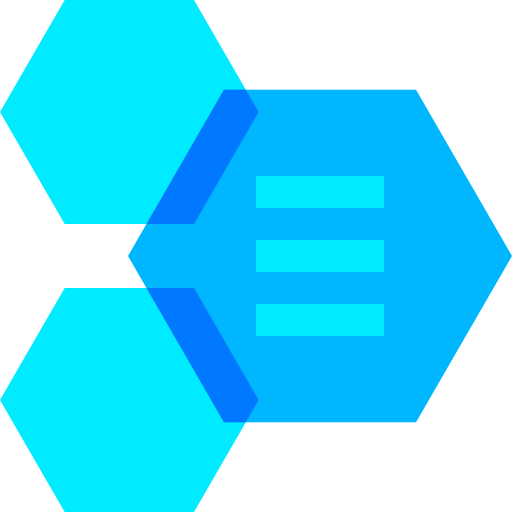

<ion-content>

  <div class="vertical-center css-selector">
    <div >
      <div class="vertical-center">
            
        </div>

      <div class="ion-text-center">

        <div style="color:white">
          <h1>#DAC</h1>
          <h3>DIRECCIÓN DE ANÁLISIS CRIMINAL<br>
             DEPARTAMENTO DE TECNOLOGIA Y SEGURIDAD DE LA INFORMACIÓN <br>
            
            ROBERTO GUILLERMO LAVAGNINO RODRIGUEZ <br>
            20070344
          </h3>
          <p>Ver. {{versionDelSistema}}</p>
        </div>
        <ion-button *ngIf="estaHabilitado" (click)=mostrarAuth()>Ingresar</ion-button>
        <ion-label *ngIf="!estaHabilitado" color="danger">El sistema esta en manteniento, se espera en {{hastaCuandoHabilitado}}</ion-label>
      </div>


    </div>   
  </div>
</ion-content>
